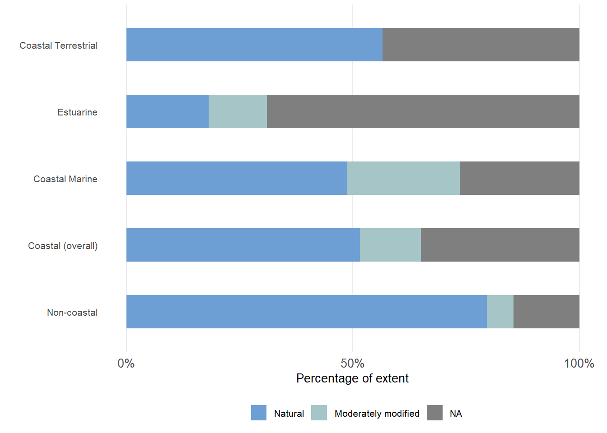

![]()
5
times more
mining
times more
mining
50%
more
agriculture
more
agriculture
3
times more
development & plantations
times more
development & plantations
2
times the
amount & rate of habitat loss
times the
amount & rate of habitat loss
Summary
Many people live and work in coastal areas, and as a result, pressure on coastal biodiversity is disproportionately high. The coastal pressures in South Africa are summarised cross-realm under 10 themes: (1) biological resource use; (2) energy production and mining; (3) pollution; (4) coastal development; (5) transportation and service corridors; (6) natural systems modifications; (7) human intrusions and disturbance; (8) aquaculture, agriculture and plantation forestry; (9) invasive and other problematic species and diseases; and (10) climate change, severe weather, and ocean acidification. The impact of these pressures on coastal ecosystem types is analysed using realm-specific methods to generate a map of coastal ecological condition. Overall, the coast is in worse ecological condition than the rest of the country (non-coastal land and sea).
Introduction
Coastal zones have high aesthetic appeal and provide people with many benefits. As a result, human population densities are much higher closer to the shore than further inland. In fact, there are more people living within 50 km of the shore today as lived on Earth in the 1930s1. This means that the human footprint is generally much higher in the coastal zone than elsewhere.
The distinct geographic position of the coast at the interface between land and sea also means that it is exposed to multiple pressures from land-based, estuarine, and marine sources. In fact, of all pressures to biodiversity mapped in the terrestrial, estuarine, and marine realm assessments, only four pressures are absent from the coastal zone (all of which are types of deep-sea fishing).
Pressures on coastal ecosystem types
The pressures on coastal biodiversity are briefly summarized below under the 10 categories established by the IUCN (Figure 1), with some slight terminology adjustments. Click the headings to view or hide the information per pressure category.
1. Biological resource use
There are many forms of biological resource use in the coastal zone, with different levels of sustainability and impact to coastal biodiversity. Photo credit: © Ryan Daly
South Africa’s coast is rich in biological resources on land, in estuaries and in the sea that are harvested for food, medicine, symbolism, and materials. Resources such as invertebrates, fish, birds, mammals, seaweeds, and plants are collected both legally and illegally, with key concerns regarding over-harvesting, bycatch, and ghost fishing. Unsustainable resource use impacts populations of target and non-target species and their respective predators, causes changes in trophic and demographic structures of foodwebs, alters energy flow through and among ecosystems, and some collection methods cause habitat damage. Certain species are particularly impacted by poaching, e.g., abalone and succulent plants.
2. Energy production and mining
Mining is a key pressure on coastal biodiversity, particularly the serial mining along the west coast. © Linda Harris
South Africa’s mineral wealth is comparable to its outstanding biodiversity, and mining is a key economic activity in the country. In the coastal zone, sand, diamonds, and heavy minerals are mined in legal and illegal operations. Mining is an intense pressure on biodiversity with long-term impacts from habitat fragmentation and loss, and species disturbance and extirpations. It can also cause pollution, proliferation of alien and invasive species, and changes in habitat characteristics that have knock-on effects to species.
Impacts to coastal biodiversity in South Africa from petroleum exploration and production are primarily in the marine realm, with increasing interest in offshore operations as part of national imperatives to grow the country’s blue economy. Petroleum activities can cause habitat loss, introduction of alien and invasive species, and various forms of pollution - including oil spills - that collectively cause habitat degradation; impact species communication, feeding, distributions and migrations; and increase the likelihood of ship-strikes to marine animals.
Renewable energy is important for achieving energy security, reducing climate change impacts, and supporting socio-economic growth in the country. Current operations in South Africa’s coastal zone include wind farms, with planned solar energy plants and green fuel (green hydrogen and green ammonia initiatives), and potential offshore wind farms. Impacts to biodiversity include habitat fragmentation and loss, species disturbance, collisions with wind turbines, and extirpations, as well as potential pollution.
3. Pollution
Pollution from plastics, wastewater, artificial light at night, noise, and obsolete ammunition are degrading the ecological condition of coastal ecosystems. Photo credit: © Fiona MacKay
Plastic pollution is present all along South Africa’s coastal zone, with substantial quantities washing into the coastal zone during flood events. The impact of plastics on biodiversity, especially coastal and marine biodiversity, has become very apparent in recent years and there are numerous campaigns globally to stop single-use plastics in particular, and to reduce use of plastics generally. Key concerns include: animal entanglement, which can lead to injury, suffocation or drowning; ingestion causing gut blockages; accumulation of chemicals derived from plastic ingestion in animal tissue; and potential increases in spread of alien and invasive species.
Land-based wastewater discharge is a significant source of chemical pollution and comprises a range of effluents and polluted runoff. Wastewater enters the sea via estuaries and outfalls, polluting ground- and surface water and sediments. Areas with high levels of organic nutrients cause eutrophication, fuel red tides and harmful algal blooms, and can cause anoxia, which may lead to fish kills. There is increasing concern over the quantities of pharmaceuticals, heavy metals and hydrocarbons recorded in the coastal zone that can accumulate in foodwebs, with risks to human health.
Artificial light at night makes naturally dark areas lighter, altering natural cycles of light and dark, and impacting species’ circadian rhythms and night-time behaviour. Impacts to coastal species have been recorded in rocky shore communities, dune vertebrates, plants, pollinators, sea turtles, and intertidal fish, and it is one of the key pressures impacting threatened beach invertebrates, e.g., the Endangered Cape pillbug, Tylos capensis.
Sound travels more readily through water, making noise pollution a particular concern in aquatic environments, especially as oceans become busier and noisier. Noise can cause direct mortality, impaired hearing, and lower immunity and increased health risks of species. It also disrupts animal communication and social behaviour, limits bird-call repertoires, impacts animal foraging behaviour and success, and alters species distributions as they avoid noisier areas.
Disposing ammunition, such as artillery shells, and expired, unusable or obselete ammunition, at sea was practiced in South Africa from the 1970s until 1995. There are several concerns for marine biodiversity: corrosion of munitions and resulting pollution and toxicity (especially from heavy metals like lead and mercury) in the surrounding environment; potential detonation, causing localised destruction; and changes to the physical environment and potential damage or smothering of natural ecosystems due to presence of foreign structures and/or damage to habitat-forming species.
4. Coastal development
Coastal development is a significant pressure on coastal biodiversity, causing habitat fragmentation and loss. © Linda Harris
Coastal development is one of the most important pressures on coastal biodiversity because it causes largely irreversible habitat fragmentation and loss, with associated impacts to species distributions and population abundance, increasing extinction risk. Ecosystems are degraded further when ecological processes are disrupted, and ecological infrastructure and ecological resilience are compromised, in turn reducing ecosytem services and benefits to people. When infrastructure is built too close to the shore, beaches are at risk of complete inundation and loss as sea levels rise, with no option for them to naturally realign further inland. Broadly speaking, the areas in South Africa associated with ports and harbours are most intensively developed.
5. Transportation and service corridors
Ports and harbours are sources of multiple pressures on coastal ecosystems, and transport corridors disrupt cross-realm connectivity and ecological processes. Photo credit: © Riaan Weitz
Ports and harbours are hubs of activity, development, and access to the sea. The impacts to biodiversity from associated activities include being hotspots of pollution, and high-risk entry points and refugia for alien and invasive species, with local habitat modification and degradation from anchorage, maintenance dredging and dredge spoil dumping. Offshore bunkering (ship-to-ship transfer of fuel) can have deleterious impacts to marine life, especially threatened colonial seabirds, e.g., African Penguins and Cape Gannets.
South Africa is a hub of shipping activity, with eight commercial ports that receive international trade. The main biodiversity impacts associated with shipping are: impacts from oil spills during shipping accidents; underwater noise; ship strikes with large marine animals; introduction of invasive alien species through ballast water discharge and hull fouling; and various forms of pollution, including when ships lose their cargo at sea.
Many roads and railway lines that run along South Africa’s coastline break connectivity of ecological processes across the land-sea interface, and in some places, are very precariously positioned and are at risk of damage and collapse in the face of heavy swell and floods. Roads and railway lines also run over estuaries on bridges, which changes sediment flow downstream, and can cause mouth closure and lead to eutrophication. Connectivity of terrestrial species through their distributions is also impacts by linear infrastructure, with many species being injured or killed by moving vehicles.
6. Natural systems modifications
Altering natural flows of freshwater and sediments, e.g., the weir in the uThukela River, impacts estuarine systems and downstream beaches and marine mud belts. © Fiona MacKay
Interruption of sand-flow processes impacts sand budgets that maintain beaches and dunes. Sand is transported to and along the coast by rivers and estuaries, wind (including through wind-driven mobile dunefields), and by waves and inshore currents. The dune-beach-surf zone within which sand moves is called the littoral active zone, where erosion (sand removal) and accretion (sand build up) are natural processes. Blocking these flows by stabilising sand dunes, replacing foredunes with coastal development, and contructing dams and weirs in estuaries reduces the amount of sand available to beaches and dunes, decreasing their resilience to large storms and sea-level rise.
Healthy functioning rivers deliver freshwater, nutrients and sediments to estuaries and the ocean, and sand to beaches and dunes. Hydrological regime change and freshwater flow reduction in estuaries from water abstraction, large impoundments and small farm dams impacts both estuarine ecosystems and downstream marine ecosystems. Without sufficient flow, water quality declines, salinity regimes are compromised, and sediment accumulates in estuary mouths, often increasing the risk of coastal flooding. Estuarine connectivity, and fish nursery functions are also compromised, with knock-on effects for marine fisheries. Trapping sediment in catchments also cuts off sand and mud supplies to downstream beaches and marine mud belts, respectively. Artificial breaching also alters natural hydrological regimes in estuaries, and can have potentially cascading impacts on the physico-chemistry of the estuary and its biological components.
Although coastal rangelands are generally a biodiversity-compatible land use, under some circumstances they can pose risks to coastal ecosystems. Livestock grazing and browsing and associated trampling can contribute to dune destabilisation, and to increased susceptibility to erosion of dunes and estuarine banks. Livestock grazing and browsing can also stunt the growth of mangrove trees and reduce biomass of salt marsh, reducing blue carbon in estuarine systems.
7. Human intrusions and disturbance
Coastal disturbance includes various forms of non-extractive human activities in the seashore zone that cause erosion and lethal and non-lethal impacts to species. © Linda Harris
Coastal disturbance includes various forms of non-extractive human activities, such as trampling, off-road vehicle (ORV) driving, in-water recreation, and boating in estuaries and the sea. Biota can get crushed, injured, or disturbed, and shorebirds can be disturbed during breeding and foraging. Trampling in dunes also risks erosion and formation of blowouts. Virtually the entire South African shoreline is accessible by foot, and is thus potentially vulnerable to human disturbance in some form.
8. Aquaculture, agriculture, and plantation forestry
There is disproportionately more aquaculture, agriculture, and plantation forestry in the coastal zone than in the rest of the land and sea, causing a variety of impacts to coastal biodiversity. © Daniel Lemley
Along the South African coast, mariculture operations take the form of in-situ aquatic operations using long-lines, rafts, racks or cages, and land-based aquaculture operations abstract sea water, pass it through a culture facility, and then return it to the marine environment. One of the main biodiversity concerns associated with aquaculture is introduction of alien and potentially invasive species to the natural environment. Other concerns include transfer of disease and pathogens to local populations; potential for emergence of superbugs due to the use of antibiotics; genetic exchange between farmed and wild populations; and changed behaviour of apex predators around installations.
Agricultural practices vary in terms of their impact on biodiversity and ecosystems. Cultivation of croplands requires clearing natural habitats, resulting in habitat loss, and contaminated agricultural return flow can pollute estuarine and marine systems, causing eutrophication. Abandoned croplands may be impacted further by unsustainable livestock grazing and alien invasive species in fallow areas.
Commercial afforestation threatens a host of coastal species through fragmentation and loss of indigenous vegetation. The concentration of a large numbers of trees can also change the local hydrology, lowering the water table and impacting streams, wetlands and indigenous plants. Plantation canopies cause shading, soil acidification and aridification, and can alter understory growth and nutrient availability to indigenous biota.
9. Invasive and other problematic species and diseases
Indigenous species are being impacted by invasive alien species, e.g., deliberately introduced species to stabilise dunes, and unintentionally introduced species from shipping, and other problematic species and diseases. © Linda Harris
Invasive alien species are an established pressure on land, but an emerging pressure in estuaries and the sea. Many of the terrestrial invasive alien species in coastal areas are present because of deliberate introductions, e.g., to stabilize mobile dunes at a time when this was considered to be best practice. In contrast, introduction of invasive alien species to the estuarine and marine realms has been generally unintentional, e.g. through hull fouling and ballast water. Invasive alien species can change community composition and local ecological processes, with direct and indirect effects on indigenous species. Invasive alien species can also contribute to wildfires and alter natural fire regimes, reduce mean annual runoff, and can reduce light, oxygen and flow in estuaries, with knock-on affects to biodiversity.
The frequency and magnitude of harmful algal blooms (HABs) are increasing in South Africa’s coastal zone, largely due to increased nutrient loading from municipal wastewater, urban stormwater, and agricultural runoff. HABs impact estuarine and coastal marine systems by causing hypoxia, impacting biodiversity and causing mass mortalities, with potential risks to human health as well.
Several other pathogens and diseases are impacting coastal species, including High Pathogenicity Avian Influenza in seabirds, rabies in seals, and a water mold (Aphanomyces invadans) that causes epizootic ulcerative syndrome in fish that is now found in almost all estuaries in South Africa.
10. Climate change, severe weather, and ocean acidification
Climate change is predicted to impact coastal ecosystems and species in a variety of ways, such as marine heatwaves causing coral bleaching. © Kerry Sink
Where coasts are unconstrained, sea-level rise does not pose a risk to coastal biodiversity because the shore will naturally realign further inland. However, where the coast has been built up with development within the littoral active zone, particularly where it is defended with seawalls, the consequence is that the shores are trapped in a coastal squeeze, with long-term risks of infrastructure failure as well. Supralittoral and high shore species are most at risk of loss, including loss of nesting and foraging habitat for shorebirds. Sea-level rise will affect saline penetration and mouth state in estuaries, altering estuarine ecology, and mangroves and salt marsh habitats may be impacted too.
Climate-change predictions for South Africa include altered rainfall patterns and more frequent extreme events, such as droughts, storms and floods. The South African east coast is predicted to get wetter, particularly from heavy rainfall events and floods, and the west coast is predicted to get drier, where recent droughts attributed to climate change have increased the extinction risk to endemic plants. Increased storminess increases coastal erosion, and can impact estuarine ecology. Although coastal ecosystems are generally able to return to pre-storm conditions, this is dependent on the frequency of events.
Coastal species are shiting their ranges in response to temperature change. This could lead to various changes in communities as biological interactions change, and pioneer species may trigger ecological successions. Coastal endemic species along the south coast may also experience a temperature squeeze between the Cool Temperate and Subtropical bioregions. Other impacts include increased likelihood and spread of wildfires, dried up water holes, and altered animal behaviour.
Extreme temperatures may have more significant impacts than overall trends in warming and cooling. Heatwaves can cause mortality in indigenous plants and favour spead of invasives, and marine heatwaves can cause coral bleaching. Thermal shock to fish and invertebrates in the marine environment may be exacerbated when marine heatwaves are followed by upwelling events, causing washouts and mortalities.
South African waters are more susceptible to impacts from ocean acidification because of the biochemistry of upwelled water, making systems like the Benguela naturally more acidic (lower pH). However, macroalgal habitats are less acidic (higher pH) than their surrounding environment, and may act as refugia for coastal species. Ocean pH levels are variable around South Africa in both space and time. Natural fluctuations in ocean acidity may either help create resilience in coastal species, or combine with gradual trends to produce more extreme conditions and impacts.
Cumulative impacts and disproportionately high pressure on coastal biodiversity
Pressures and impacts on biodiversity in the coastal zone are generally more intense than further inland and offshore. This is evident by comparing the severity of pressures on biodiversity cross-realm: South Africa’s coastal zone has one of the highest overall pressure profiles (Figure 1). For a broader comparison of pressures among realms, see the integrated findings.
The disproportionate impact of pressures on coastal biodiversity is also evident in the landcover maps. Currently, South Africa’s coastal zone proportionately contains about five times more mining, three times more development and plantations, 50% more agriculture (croplands), and twice the overall amount and rate of natural habitat loss (0.2% pa vs. 0.1% pa) than that for the rest of the country (Figure 2, Table 1).
| Landcover Class | Non-coastal | Coastal |
|---|---|---|
| Natural | 78.0 | 60.0 |
| Cropland | 17.0 | 25.7 |
| Plantation | 1.6 | 4.3 |
| Built up | 2.6 | 9.1 |
| Mine | 0.2 | 1.1 |
| Artificial waterbody | 0.4 | 0.1 |
Download the data here.
Ecological condition of coastal ecosystem types
Mapping ecological condition essentially gives a spatial representation of the overall effect of various pressures on biodiversity, and is one of the input datasets for calculating ecosystem threat status. Ecological condition is estimated using different approaches in the separate realms: in the terrestrial assessment it relies primarily on land-cover change; in the estuarine assessment, a multi-criteria framework is used; and in the marine assessment, cumulative pressure mapping is used. For details on the realm-specific methods, see the Ecological condition across realms section of the integrated findings and the individual realm pages on ecological condition (terrestrial, estuaries, marine).
Although different methods for calculating ecological condition were used in the separate realm assessments, they were aligned as far as possible to allow for cross-realm comparisons and unified terminology. Ultimately, these are presented in the coastal assessment in four simplified categories (that link to the IUCN Red List of Ecosystems categories): natural/near-natural; moderately modified; heavily modified; and critically modified. Importantly, severely modified habitat is included differently among realms. For terrestrial and marine habitat, severely modified areas are included with heavily modified, and for estuarine habitat, severely modified areas are included with critically modified.
The ecological condition of all coastal ecosystem types was extracted from the three realms and compiled into a single map, revealing that half (48%) of the South African coast is in a modified state, and a quarter (26%) is severely/critically modified (Figure 4, Figure 5). There is also more than double the amount of natural habitat that has been modified in the coastal zone than in non-coastal areas (Figure 5). Broadly speaking, the places with the highest population density are associated with coastal areas in the most heavily to critically modified ecological condition. These include the southwestern Cape, southeastern Cape, and most of KwaZulu-Natal. Importantly, these areas are all associated with ports and harbours, and their related burgeoning development in the surrounding area.

| Realm | Natural | Moderately modified | Heavily modified | Severely/critically modified |
|---|---|---|---|---|
| Non-coastal | 79.6 | 5.9 | 1.7 | 12.8 |
| Coastal (overall) | 51.6 | 13.5 | 9.4 | 25.5 |
| Coastal Marine | 48.8 | 24.8 | 10.5 | 15.9 |
| Estuarine | 18.2 | 12.8 | 60.2 | 8.8 |
| Coastal Terrestrial | 56.5 | NA | 5.8 | 37.6 |
Technical documentation
Publication
Harris, L.R., van Niekerk, L., Sink, K.J., Skowno, A.L., Kirkman, S.P., Adams, J.B., James, N.C., Lamberth, S., Lemley, D.A., Majiedt, P., MacKay, F., Newman, B., Pichegru, L., Porter, S.N., Taljaard, S., Van Der Merwe, S. Pressures on coastal biodiversity in South Africa: a cross-realm review. African Journal of Marine Science. In review.
Description of the different pressures on coastal ecosystem types and species in South Africa.
Data availability
The following datasets are available for download:
- Coast ecosystem condition map
Spatial data for the individual pressures should be requested from the relevant sectors and are not available for third-party transfer and sharing.
Recommended citation
The publication is the preferred citation for this content, otherwise use:
Harris, L.R., Sink, K.J., Skowno, A.L., & Van Niekerk, L. 2025. Pressures and Ecological Condition: Coastal zone. National Biodiversity Assessment 2025. South African National Biodiversity Institute. http://nba.sanbi.org.za/.
References
1. Cosby, A.G. et al. 2024. Accelerating growth of human coastal populations at the global and continent levels: 20002018. Scientific Reports 14: https://doi.org/10.1038/s41598-024-73287-x